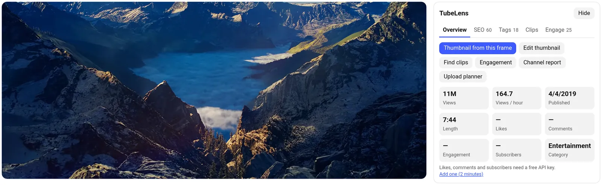

Lesson 1 · 2 min
Start here
TubeLens adds four things to YouTube: a panel next to every video, a toolbar popup, an upload planner and a thumbnail maker. Everything runs in your browser.

- Click the puzzle-piece icon in Chrome's toolbar and pin TubeLens, so the popup is one click away.
- Open any video on YouTube. The panel appears beside the player, and floats in the corner on Shorts.
- Optional: add a free YouTube Data API key (lesson 12). It adds likes, comments and subscribers, and turns on comment replies, channel research and the strategy report.
Tip The Overview tab has shortcuts to every tool for the video you're watching: thumbnails, clips, engagement, the channel report and the planner.